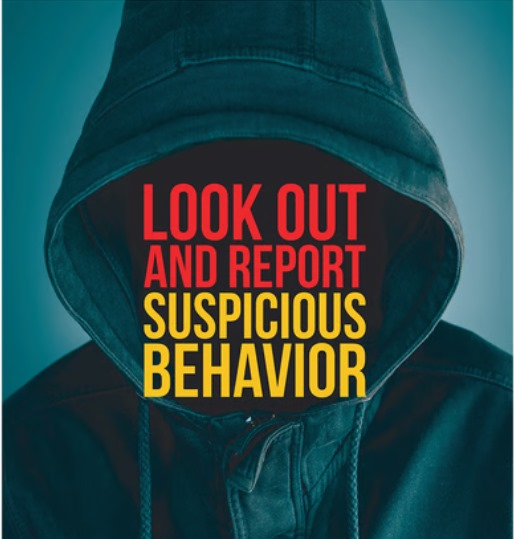
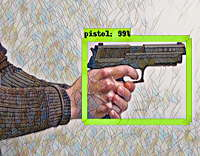

Key Feature

Suspicious Activity

--- Weapon detection using AI and deep learning technologies is used for security applications to recognize and interpret scenes using the footage of video surveillance systems.
--- If you suspect suspicious activity with YOLOv8, review code and configurations, audit access permissions, and monitor system logs for anomalies. Conduct network traffic analysis and ensure regular updates to software dependencies for security patches.
--- Using YOLOv8 for person tracking involves detecting individuals in images or video frames, predicting bounding boxes around them, and implementing frame-to-frame tracking using algorithms like Kalman filtering.
In case of any query